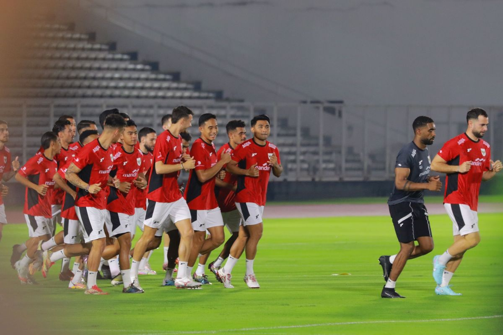
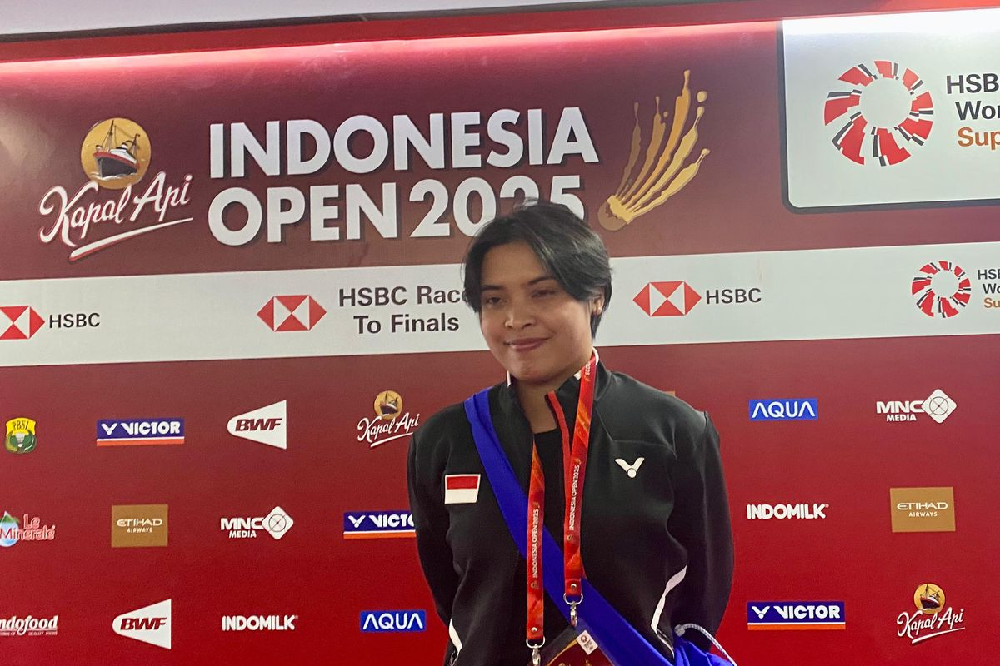

Tyronne del Pino Tinggalkan Persib, Pemain Terbaik Liga 1 Ucap Sayonara ke Bobotoh

Pemain terbaik Liga 1 2024-2025 Tyronne del Pino memilih untuk meninggalkan Persib Bandung usai membantu mempertahankan gelar juara. Tyronne del Pino hengkang dari Persib melalui pernyataan diumumkannya pada Rabu (4/6/2025) melalui unggahan video di akun instagram miliknya.
Segala Hal yang Perlu Diketahui Jelang Laga Timnas Indonesia Vs China

Timnas Indonesia bakal menghadapi laga sangat krusial menghadapi China dalam partai lanjutan Grup C Putaran Ketiga Kualifikasi Piala Dunia 2026 Zona Asia. Jadwal Timnas Indonesia vs China digelar pada Kamis (5/6/2025) di Stadion Utama Gelora Bung Karno, Jakarta, pukul 20.45 WIB. Pelatih timnas Indonesia, Patrick Kluivert, menunjukkan rasa percaya diri tinggi jelang laga penting melawan China.
Gregoria Perlahan Pulih dari Vertigo, Berambisi Comeback di Japan Open 2025

Gregoria Mariska Tunjung optimistis dapat bermain di Japan Open 2025 pada Juli mendatang, pasca pemulihan vertigo. “Aku berharap banget untuk bisa main di Japan Open, berdoa semoga (vertigonya) tidak kambuh lagi,” katanya dalam konferensi pers di sela-sela Indonesia Open 2025 di Istora Senayan, Rabu (4/6/2025).